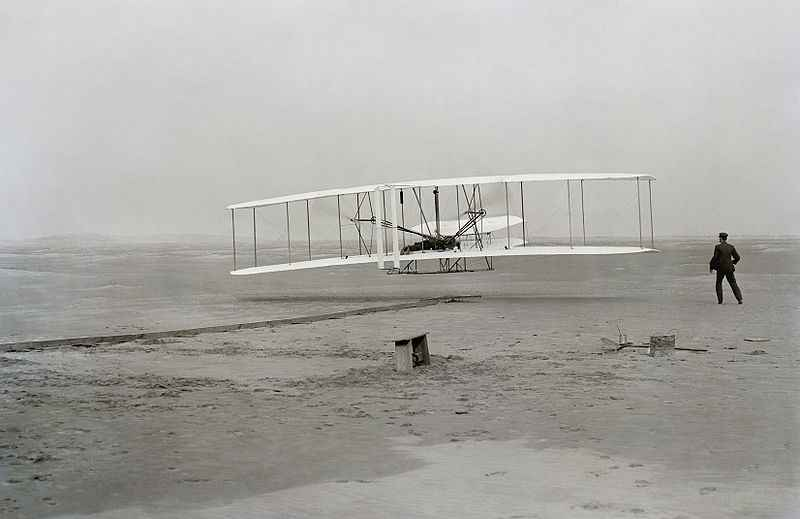

Biography of my Mentor

my Mentors are the Wright brothers
Orville and Wilbur Wright are credited with inventing the airplane. They were the first to make a successful human flight with a craft that was powered by an engine and was heavier than air. This was quite a milestone and impacted transportation throughout the world. It took some time to perfect, but in later years people could travel large distances at much less time. Today, trips that previously would have taken months by boat and train, can now be traveled by plane in a few hours.
Where did the Wright Brothers Grow Up?
Wilbur was the older brother by about 4 years. He was born in Millville, Indiana on April 16, 1867. Orville was born in Dayton, Ohio on August 19, 1871. They grew up in Indiana and Ohio, moving back and forth a few times with their family. They had 5 other siblings.The boys grew up loving to invent things. They got interested in flying when their dad gave them a toy helicopter than flew with the help of rubber bands. They experimented with making their own helicopters and Orville liked to build kites.They studied how birds flew and used their wings to help design the wings for their gliders and planes.Who flew the first flight?
Orville made the famous first flight. The flight took place at Kitty Hawk North Carolina on December 17, 1903. They chose Kitty Hawk because it had a hill, good breezes, and was sandy which would help soften the landings in case of a crash. The first flight lasted 12 seconds and they flew for 120 feet. Each brother made additional flights that day that were slightly longer. This wasn't a simple or easy task they had completed. They had worked and experimented for years with gliders perfecting the wing design and controls. Then they had to learn how to make efficient propellers and a lightweight engine for the powered flight. There was a lot of technology, know how, and courage involved in making that first flight. The Wright Brothers didn't stop with this first flight. They continued to perfect their craft. Around a year later, in November 1904, Wilbur took their newly designed airplane, the Flyer II, to the air for the first flight lasting over 5 minutes.